Installation explanation
The redesigned page pairs installation copy and a CTA with the video instead of using a full-width video block.
← Selected work / Website Design & Builds
I built NxtDib’s website from scratch and redesigned pages across the Every Window and Axe & Kindle sites: homepages, product pages, an installation page and a blog page. This selection pairs a complete website build with before-and-after examples of content hierarchy, visual presentation and customer actions.
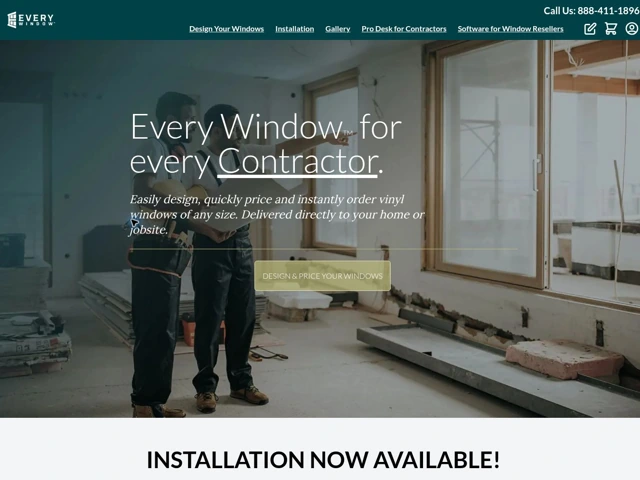
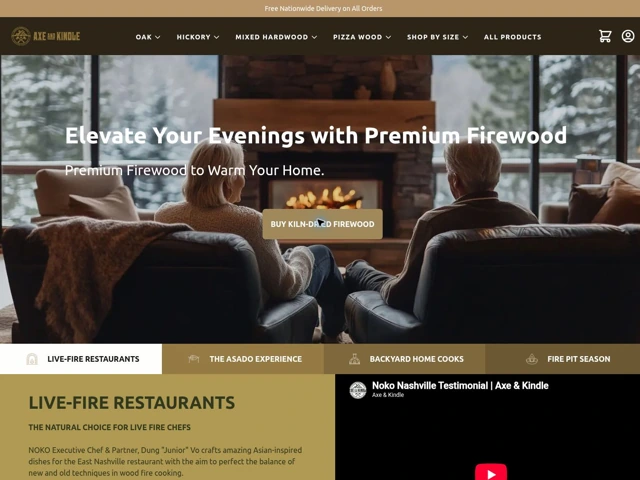
Each page had to introduce the brand, explain the offer and help visitors choose their next step. Every Window combines window selection, installation information and buyer education. Axe & Kindle combines firewood shopping, live-fire cooking, delivery information, trust signals and a content library.
The earlier captures already contain substantial content. My redesign work focused on how that content is presented and organized.
I built nxtdib.com from scratch as part of my multi-brand marketing work. I also redesigned the Every Window homepage, a product page and the installation page, and the Axe & Kindle homepage, product pages and blog page. For Axe & Kindle I redesigned every product page; the oak firewood page below is one example. My contribution covered page design, section hierarchy, imagery placement and calls to action, using the CMS page builder to assemble and refine pages. The supplied captures document these design decisions.
I also helped with the Levo Aero website redesign.
Every Window: reorganized the installation introduction, changed the installation video from a full-width block to a text-and-video section, brought customer reviews higher into the homepage, and turned the style section into a visual selection grid. The product and installation pages follow the same teal, cream and olive-gold system, with image-led sections and clear calls to action. The redesigned footer uses a stronger deep-teal treatment.
Axe & Kindle: reduced the homepage partner-logo display, changed the customer-review grid into horizontal cards, rebuilt the product-page template with size selection and image-led supporting sections, and gave the blog an introduction, category tabs and a card layout. The existing signup and contact sections remain part of the homepage.
The NxtDib deliverable was a website built from scratch. For Every Window and Axe & Kindle, the supplied before-and-after captures of homepages, product pages, an installation page and a blog page document changes in layout, content hierarchy and visual presentation.
These captures do not establish a change in conversion rate, revenue, page speed, accessibility or user satisfaction. No performance improvement is claimed without a comparable measurement period.
Sources: my confirmed NxtDib website-build experience, plus the full-page before-and-after PDF captures supplied for each page shown below. The captures describe the supplied versions; the Every Window current-site detail is dated October 29, 2026. Mobile homepage PDFs are also included for both brands; the captures demonstrate the layouts shown, rather than cross-device testing results.
Explore the before-and-after captures and selected design details. Every pair is a full-page PDF capture, shown here as a scrollable preview. Open a PDF to zoom into the full-quality capture, or download it. Mobile homepage examples sit alongside the desktop comparisons for both brands. All source files are available to download.
B2B wholesale beverage marketplace
I built nxtdib.com from scratch. This project demonstrates my website-building experience alongside the redesigns below.
A more structured introduction to windows, installation and buyer education, using deep teal, cream and olive-gold accents.
Homepage layout, section hierarchy, visual styling and placement of installation guidance, reviews and window styles.
Visitors need to understand both the window offer and the installation option before choosing a next step. I grouped related information and gave product selection, guidance and customer feedback distinct places on the page.
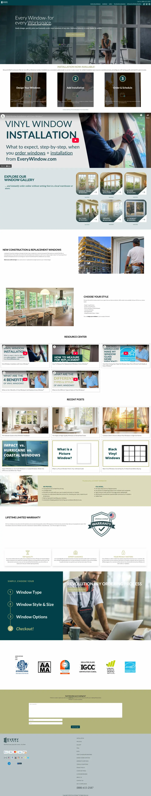

The redesigned page pairs installation copy and a CTA with the video instead of using a full-width video block.
Customer reviews appear higher on the page, and the style section becomes a visual grid of window options.
Recent posts, educational videos and the benefits section receive more defined layouts; the footer adopts a cohesive deep-teal treatment.
The mobile capture shows window options, installation guidance and supporting content arranged for a narrow screen, carrying the deep-teal and cream visual system through the page.
Scroll within the preview to explore the full mobile page.

The current style grid groups six window types with labeled imagery and a Start Designing action.
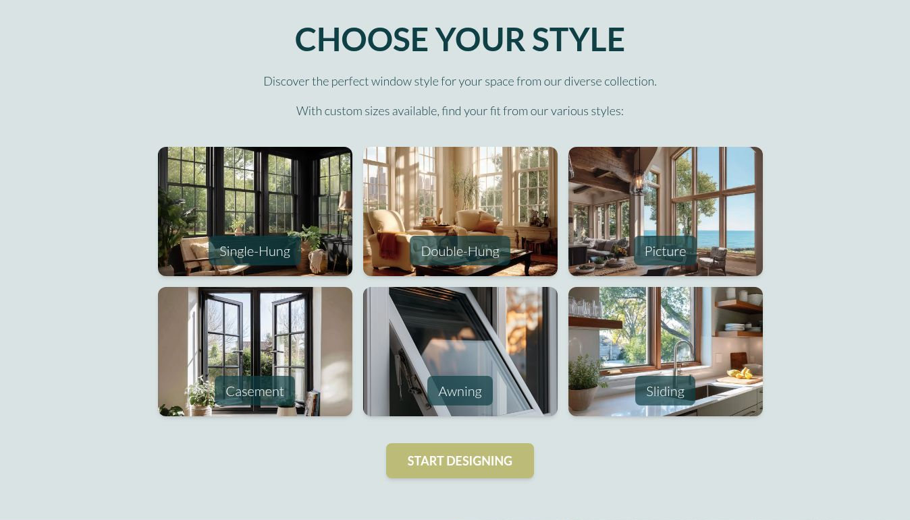
A category page that explains the product, answers common questions and routes visitors to the next style.
Single-hung product-page layout, product education, image-and-text sections and links to other window styles.
A shopper may arrive knowing little about window types. I organized the page around understanding single-hung windows, assessing their benefits and comparing other styles before starting a design.
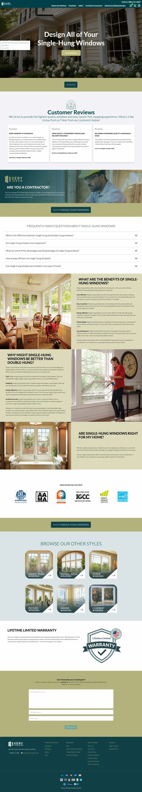
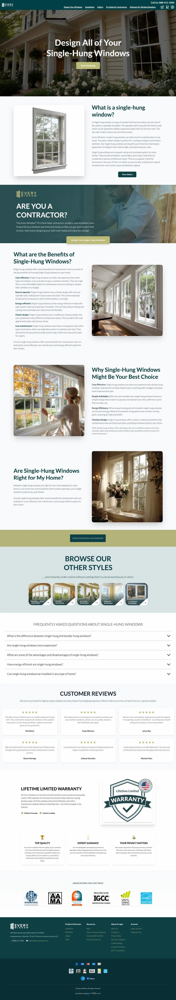
The page opens with a “What is a single-hung window?” panel beside a product image, followed by a contractor callout band.
Benefits and “why choose” content alternate text with photography instead of running as long text blocks.
Other window styles appear as image tiles, giving visitors a visual path to the next product page.
A page that explains what installation includes, shows the process and gives visitors a clear action at several points.
Installation-page layout, process presentation, service checklist, benefit cards and CTA placement.
Installation introduces questions about measurements, responsibilities and what the service includes. I broke that information into a visible sequence and focused sections to support the decision to request installation.
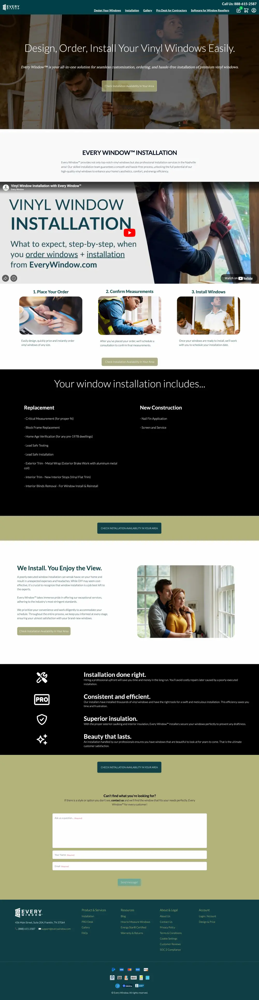
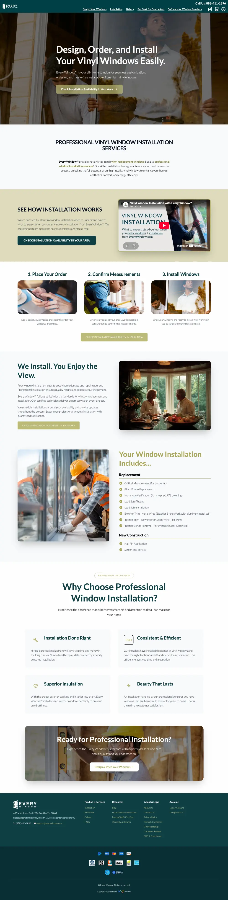
The three steps (place your order, confirm measurements, install) are shown as image cards next to an installation video card.
The installation checklist moves from a dark full-width list into a titled card, organized under Replacement and New Construction.
Four benefit cards and a closing “Ready for Professional Installation?” banner replace the earlier icon list and repeated buttons.
A more focused premium-firewood homepage with a more compact presentation of partner logos and customer reviews.
Homepage layout, product presentation, partner-logo treatment and customer-review presentation.
The homepage needs to balance product browsing with reasons to trust the brand. I made partner logos and reviews more compact so supporting proof fits alongside the shopping journey.
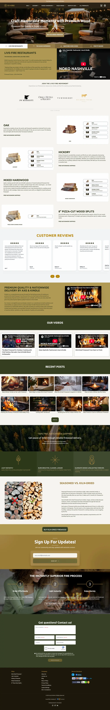
The large collection of partner logos becomes a smaller, selected display.
The earlier multi-row review grid becomes a horizontal row of cards with previous/next controls.
Oak, hickory, mixed hardwood and pizza-cut wood keep the same order, with a cleaner product-and-size presentation.
The mobile capture stacks product sections, customer reviews and supporting content in a single column, carrying the firewood brand’s colors and imagery through to the contact form and footer.
Scroll within the preview to explore the full mobile page.
The redesigned page presents customer feedback in a horizontal row with navigation controls, replacing the earlier grid.
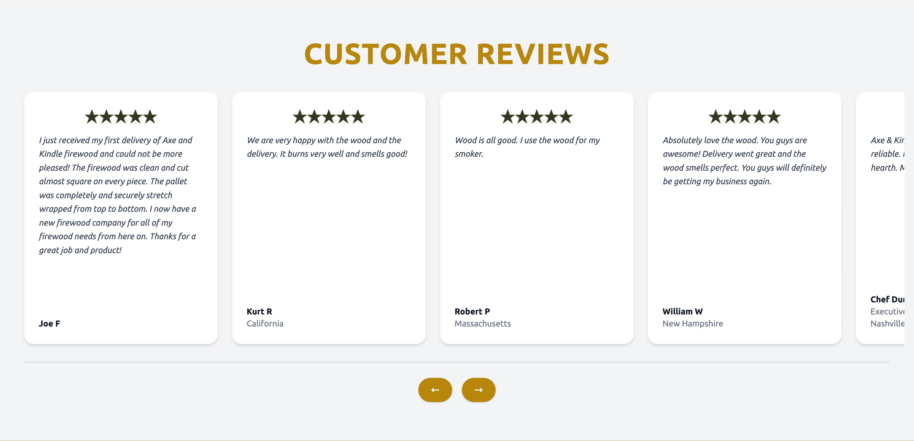
One example of the product-page template I redesigned for every Axe & Kindle product. The before and after captures show different oak size variants (face cord and 4-stack).
Product-page design across every Axe & Kindle product, including purchase-area hierarchy, size navigation and supporting content. Oak firewood is the example shown.
Firewood buyers need to understand the quantity, specifications and delivery details before ordering. I grouped the purchase information and gave size selection and supporting explanations clear sections within a consistent product-page design.
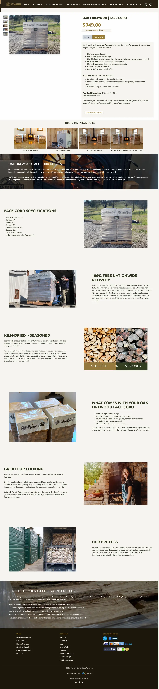
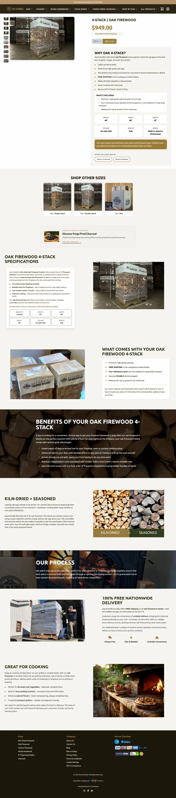
Price, free-shipping note and add-to-cart sit beside the product gallery, with a “Why oak 4-stack?” summary and a “What’s included” grid.
A “Shop other sizes” row lets visitors move between single stack, double stack and box.
Specifications, kiln-dried vs. seasoned, process, delivery and cooking sections each get their own image-led block.
A blog index that introduces the content and lets visitors scan guides, recipes and tips.
Blog-index layout, introductory copy presentation, category navigation and article-card styling.
Readers come for different reasons, from cooking advice to home-fireplace guidance. I added a clearer introduction and category navigation, with a consistent card layout to make relevant articles easier to scan.
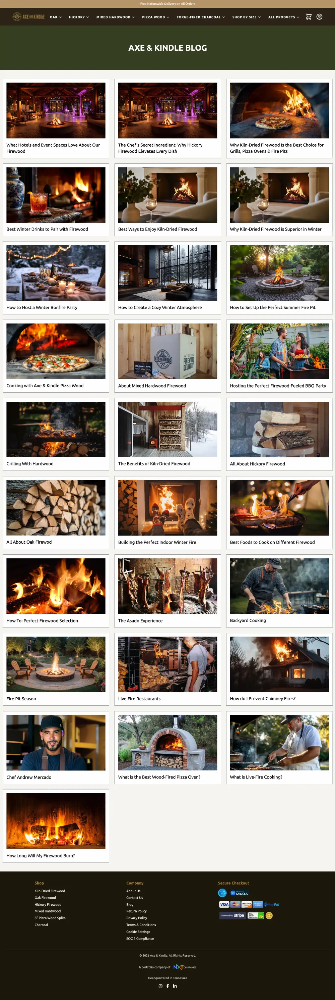
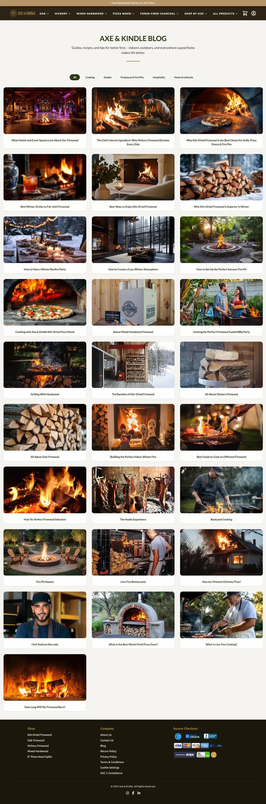
A short intro line and category tabs (All, Cooking, Guides, Fireplaces & Fire Pits, Hospitality, Home & Lifestyle) sit above the posts.
Posts appear as rounded cards with larger imagery and centered titles instead of bordered boxes.
The solid green banner is replaced by a quieter heading, so the posts start higher on the page.